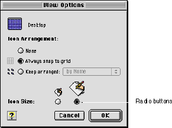
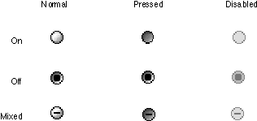

Radio Buttons
Radio buttons always occur in groups. An individual radio button displays one of three states: on, off, or mixed. To activate a radio button, the user can click the button itself or its text label. Only one button in a group can be in the on state, which is indicated by a dot in the middle of the button. Activating a radio button turns off whichever button was previously on in that group.Radio buttons display settings; they never initiate an action. Figure 2-4 shows a dialog box that uses radio buttons to offer icon size choices to the user.
Figure 2-4 Radio buttons for selecting icon size

A group of radio buttons should contain from two to approximately seven items. It is possible to have more than seven buttons in a group, but you must always have at least two. Each group of radio buttons generally has a label that identifies the choices the group contains, and each button in the group usually has a name or icon that identifies its particular effect. A set of radio buttons always has the same set of choices; it is never dynamic (the contents do not change depending on the context).
Radio buttons represent related choices, but not necessarily opposite ones. These choices are mutually exclusive; the user can only set one button to the on state at any one time.
There is a special case called the mixed state, which shows that a selected range has a variety of items in the on state. For example, a set of radio buttons for selecting font size might have buttons representing 10- and 12-point sizes. If a passage of text with both 10- and 12-point text was selected, both the 10 and 12 buttons would appear in the mixed state. The "one button per set" rule still applies, however; if the user selected the button marked 12, all the text in the selection would change to 12 point, and the mixed state would be cleared.
Radio buttons appear differently in their normal, pressed, and disabled modes depending on whether they are on, off, or in the mixed state. Figure 2-5 shows how radio buttons look in their various modes and states.
Figure 2-5 Radio button modes and states

If more than one group of radio buttons is visible at a given time, each group needs to be visually separated from the others. You should design your dialog box to allow enough space to clearly delineate multiple sets of radio buttons. It can be useful to draw a line between a group of radio buttons and other elements. The separator line control described in "Separator Lines" (page 47) is designed to do this. Group boxes (page 44) may also be used for this purpose.
For more information on laying out radio buttons in dialog boxes, see "Checkboxes and Radio Button Layout" (page 71).